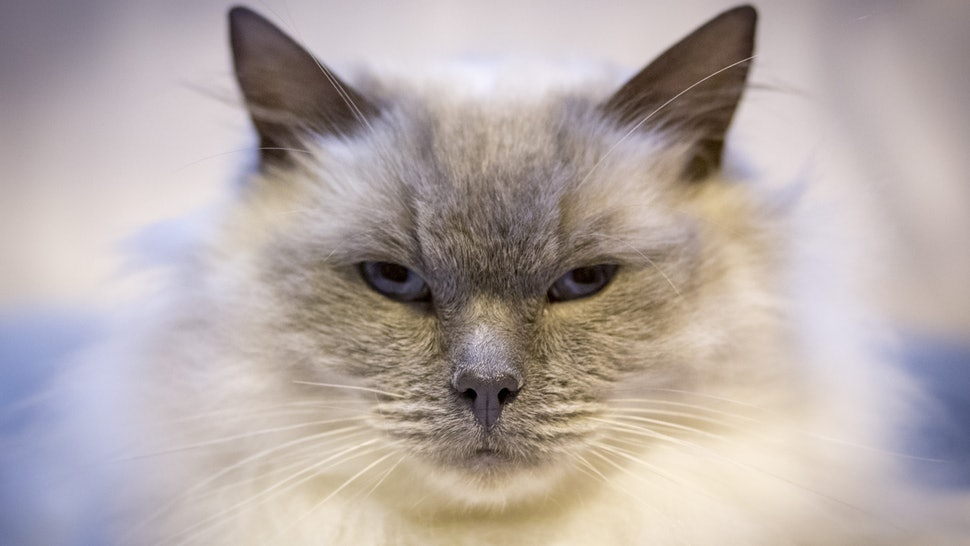
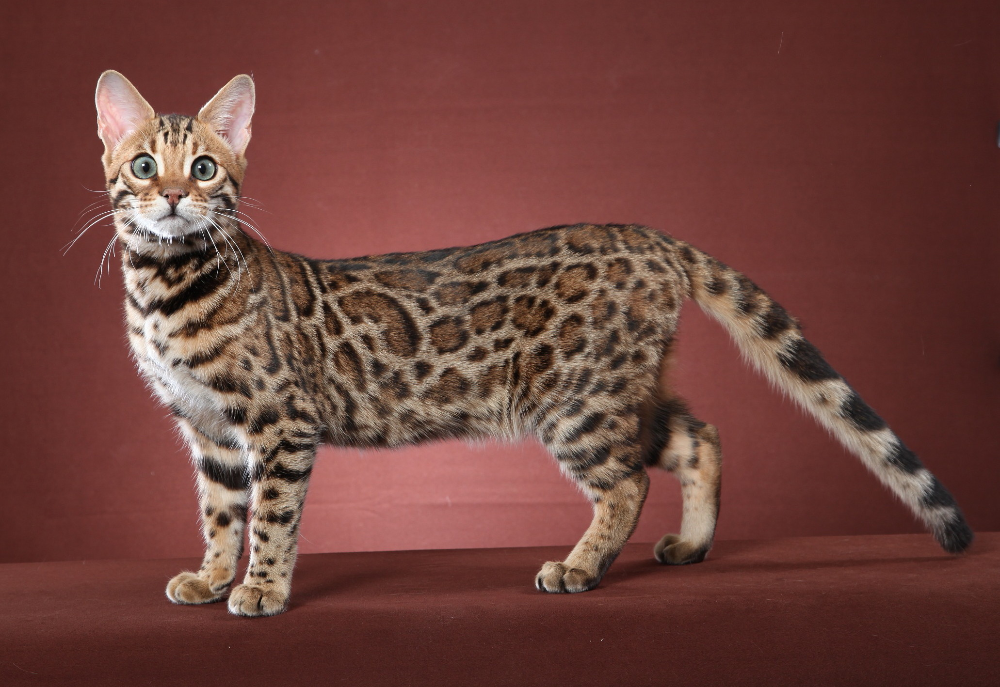
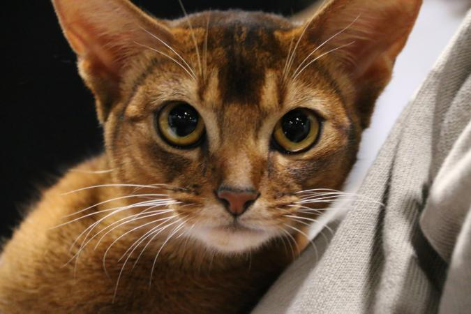
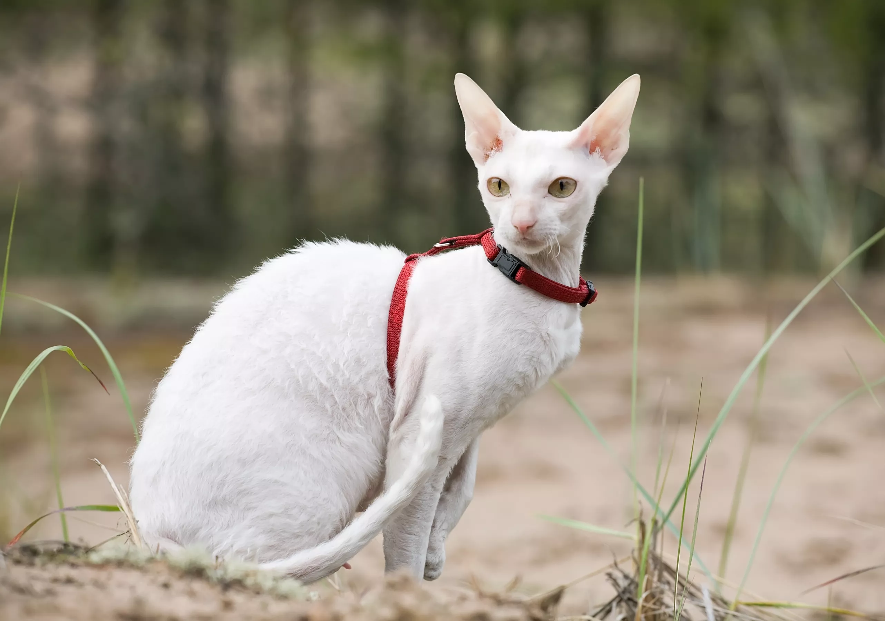

3 Most Intelligent Cats To Adopt If You Want A Clever Companion
By: Mo Rashad

It's a truth universally acknowledged that if you're looking for a smart pet, cats are a pretty good way to go. But figuring out the smartest cat breeds depends on how you define smarts. Cats aren't actually that obedient when it comes to standard intelligence tests. Professor Mary Bly explained to Purina, "Dogs come when they’re called; cats take a message and get back to you.” However, the breeds that are deemed to have the most intelligence when it comes to humans are the ones who are the most sociable and willing to learn — so if you're looking for a hyper-intelligent cat, you'll be recommended a breed that has a reputation for showing off its smarts. Many other cats may be perfectly intelligent, but have no inclination to demonstrate it at all.
Be warned that if you want an intelligent cat, you'll likely adopt an animal that thinks for itself — and might outsmart you on the regular. Here are five of the smartest cat breeds.
1. Bengals
These chatty beauties are among the top most intelligent cat breeds, according to research by Purina. Bengals have only existed in their current form since the 1980s, and are crosses between domestic cats and Asian Leopard Cats. Bengals are marked by their ability to learn tricks, though their own intelligence means they make the choice about whether to obey or not. They're also one of the sole recommended cat breeds for leash training. Bengals are hyper-interested in their environments and will do everything from switching off lights to opening windows and cupboards. They also love water and will play in baths and puddles whenever they get the chance.
2. Abyssinian
The Abyssinian cat is a beautiful animal — females are small and sleek, while males are huge and can look like orange lions — that pairs image with intelligence. The breed is thought to have emerged from Ethiopia, and made its way over as a pet to Europe in the late 1800s. Abyssinians are also known as "Aby-grabbies", according to Purina, because of their tendency to get hold of anything that grabs their interest, from toys to human appliances to wires.
3. Siamese
The classic "intelligent cat," the Siamese slim-faced breed is generally blue-eyed and pale with large ears. It originally hails from Thailand, and is extremely affectionate and trainable, hence its reputation for smarts. Like Bengals, Siamese are incredibly chatty, with a particular vocalization known as the "Siamese wail" unique to the breed.